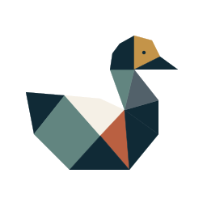
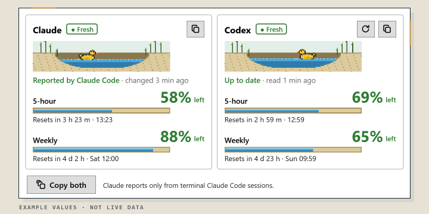

Cabinet of Puzzles
A collection of little challenges, hidden mechanisms and moments of discovery, taking shape.
In development · Not yet available
Patitos FortuneGames & apps · Patitos Fortune
Games, puzzles and practical tools from the Patitos Fortune creative software lab. Each experiment has its own character. They share a curiosity for how things work.
Everything below is in development or planned. This page shows what is being explored, not what has been released.
Play & discover
Ideas you can turn over, test, and eventually play.
A collection of little challenges, hidden mechanisms and moments of discovery, taking shape.
In development · Not yet availableContracts, clever melds and a proper table-game atmosphere.
Artwork for Patitos Rummy. All rights reserved.
In development · Not yet availableWork smarter
Useful little systems with the same experimental spirit.

Two ponds. Your quota at a glance. A lightweight Windows utility for viewing Claude Code and Codex usage limits without leaving your desktop.
Example values, not live data. One panel each for Claude Code and Codex. Not affiliated with or endorsed by Anthropic or OpenAI.
Windows app in developmentEditorial principle
The studio stays calm and consistent. Each product can bring its own energy, illustration and interaction, without changing the central Patitos Fortune identity.
Return to the studio homepage